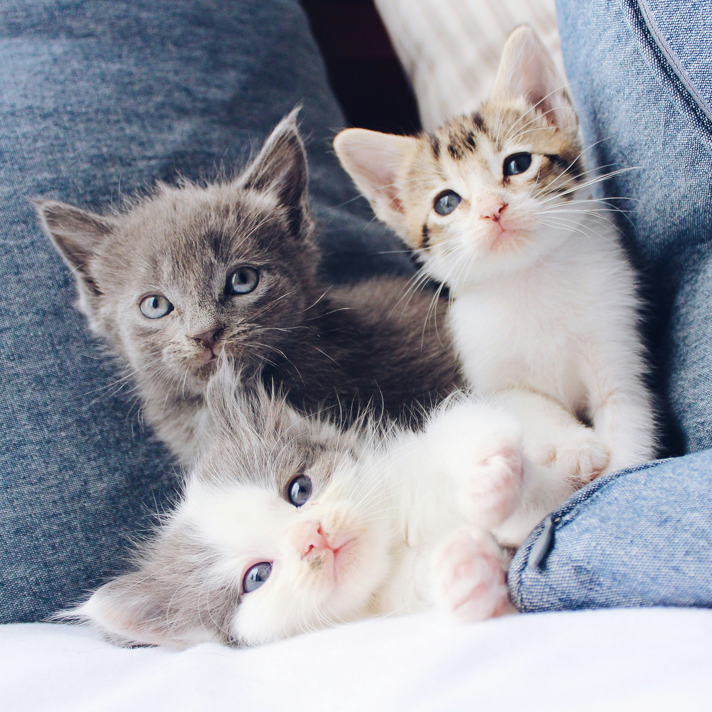
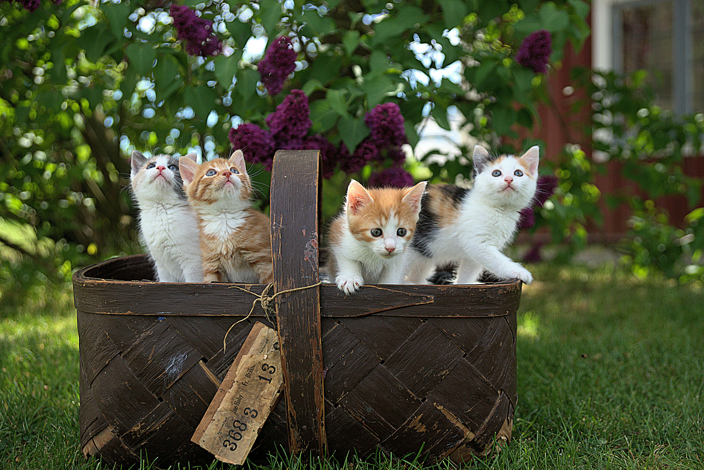

Long Time Internet Subjects
Cats have captivated the internet for years, from early viral videos to today’s endless stream of memes and GIFs.
Their mysterious expressions and unpredictable antics make them perfect for online entertainment. Whether they’re squeezing into boxes, knocking things off tables, or simply staring into the camera with judgment, cats seem naturally made for the spotlight.
Their charm is timeless, their presence iconic — proving again and again that cats are the internet’s favorite stars.
Today, their legacy continues across platforms like YouTube, Instagram, and TikTok. Whether they’re flaunting their fluff, launching surprise attacks, or just giving the camera a judgmental glare, cats remain one of the internet’s most beloved and enduring subjects. At Cats Power the Internet, we celebrate their timeless ability to entertain, enchant, and dominate our feeds — one paw at a time.
Long Time Internet Kings
Since the early days of the web, cats have ruled the internet. From viral classics like “Keyboard Cat” to today’s TikTok superstars, they’ve been at the center of online culture — loved for their sass, mystery, and perfect comic timing.
What makes cats so captivating? It’s their unpredictability. One moment they’re lounging like royalty, the next they’re stuck in a box or knocking things off a shelf. They don’t seek attention — they command it.
At Cats Power the Internet, we celebrate these feline kings for what they are: effortless, elegant, and endlessly entertaining. Their reign shows no signs of ending — and honestly, we wouldn’t have it any other way.
